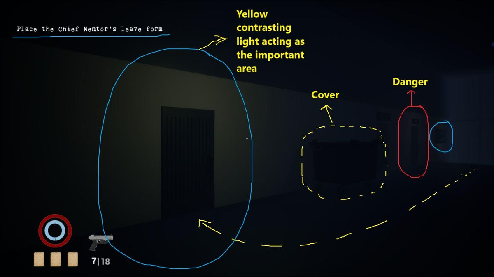
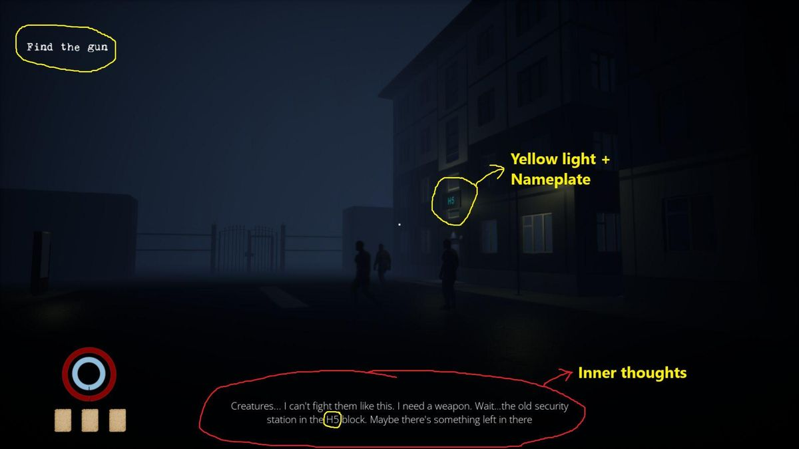
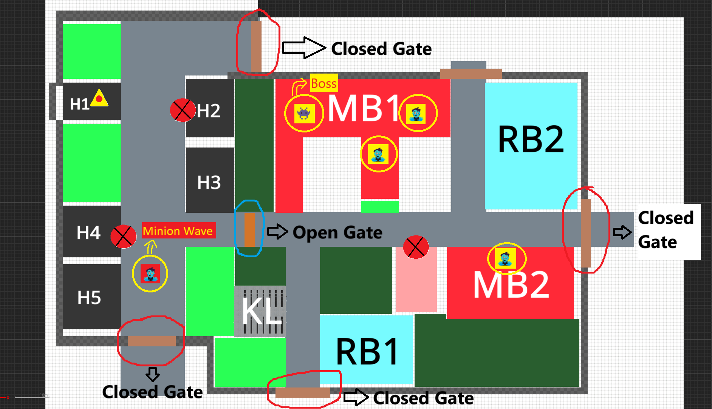
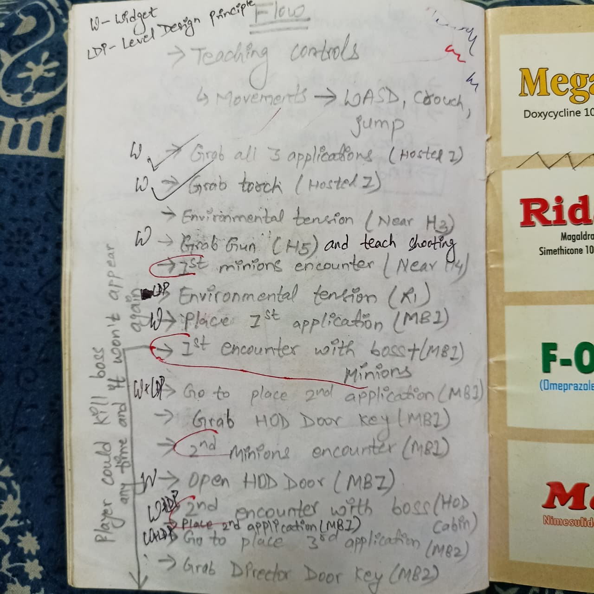
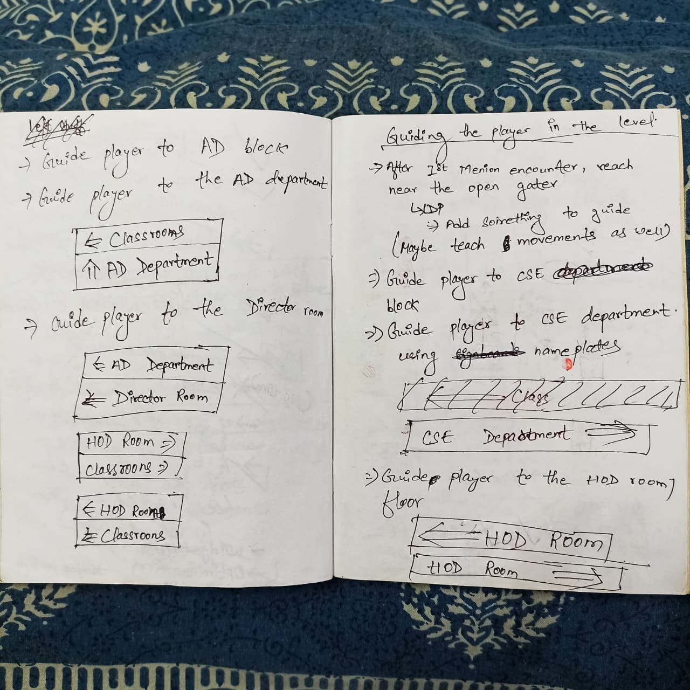
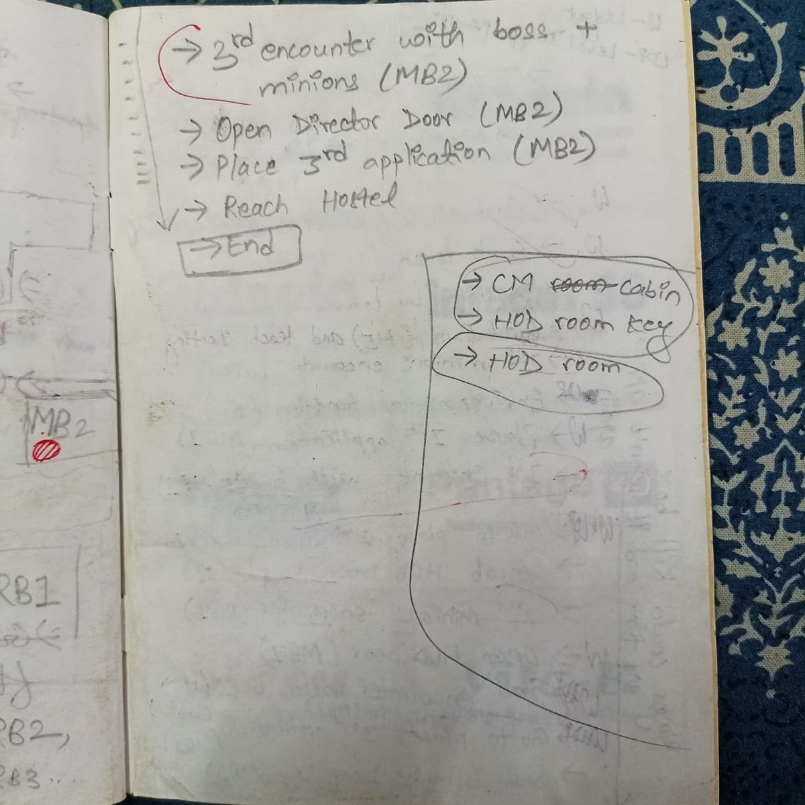
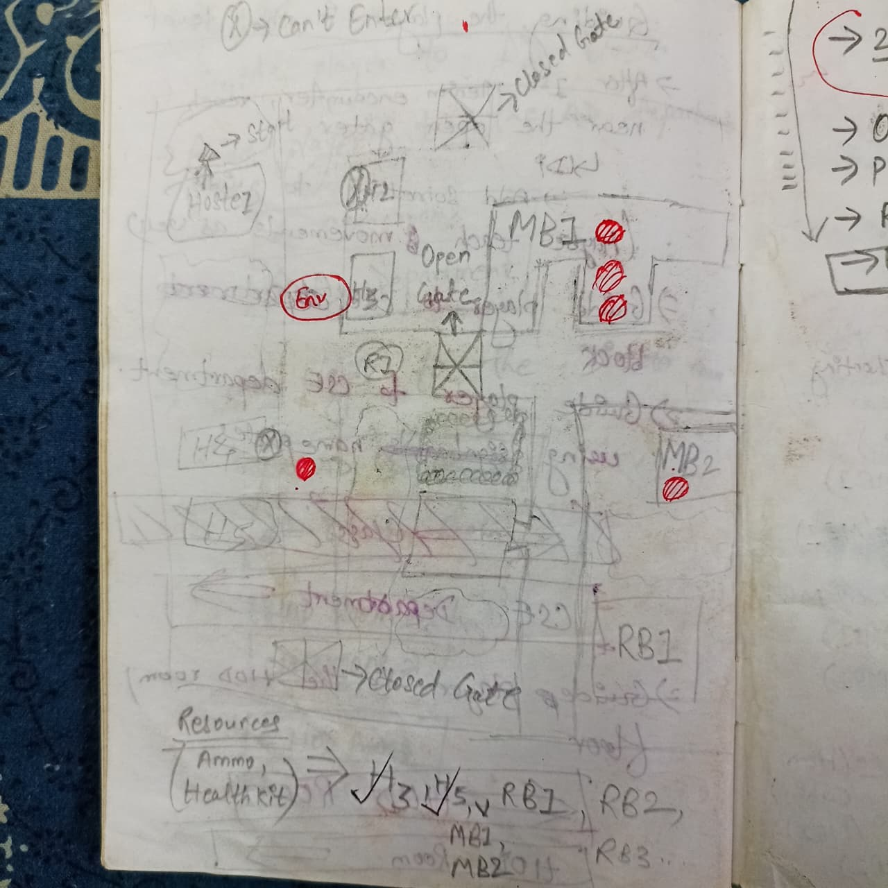
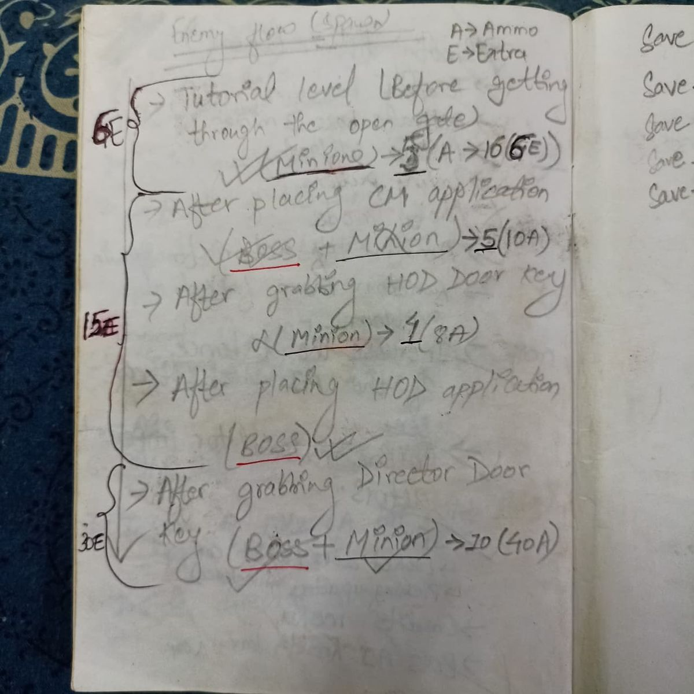
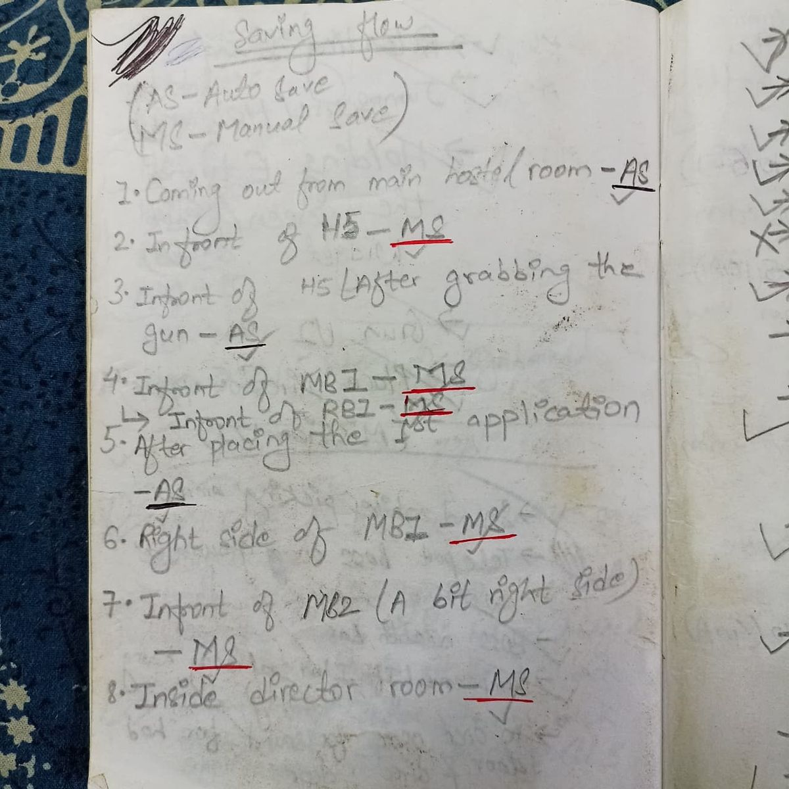
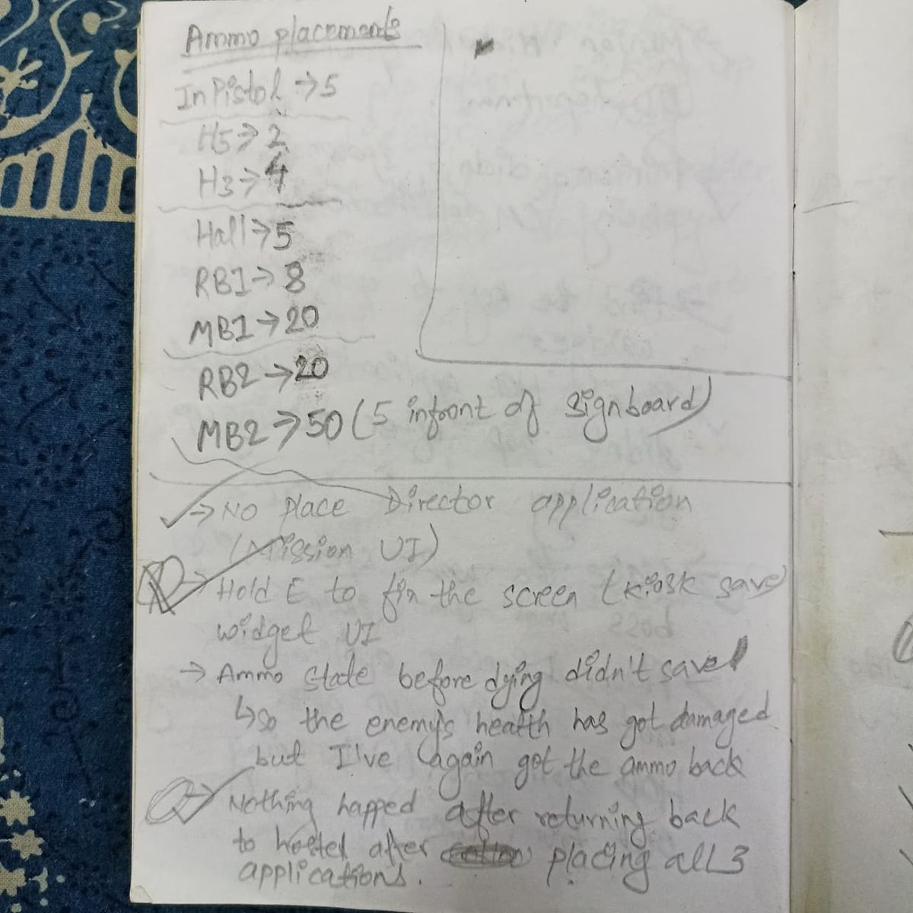

Eclipse of Fear
*Note: This prototype strips away traditional UI to create a highly immersive, vulnerable player experience driven entirely by systemic AI and diegetic cues.*
Game Overview
What creates more anxiety: Ghosts or Paperwork?
Eclipse of Fear is a first-person survival horror prototype set in a college campus after midnight. What begins as a simple, relatable student task of submitting mandatory leave forms escalates into a tense survival experience as enemies, resources, and the environment itself grow increasingly hostile.
The project focuses on creating fear through pressure, pacing, and systemic escalation rather than scripted jump scares or inflated enemy counts.
Design Pillars & Pacing
The aesthetic is one of Academic Horror—dark corridors, locked faculty offices, and the oppressive silence of a campus at night. I adopted a top-down approach: defining the emotional curve (Curiosity → Anxiety → Panic → Relief) and building systems to service that curve.
1. Grounded Horror
Use a realistic campus layout.
Players read space based on intuition, not UI markers.
2. Lives as Papers
Traditional health is replaced with physical forms.
Failure feels narrative and emotional as items burn.
3. Inner Thoughts
Tutorials replaced with the protagonist’s thoughts.
Subtly teaches mechanics while maintaining immersion.
4. Escalation
Completing objectives triggers danger.
Success induces tension, not safety.
Narrative Structure
ACT I: Setup (Curiosity)
Hostel Zone. Teaches movement safely. Introduces the Flashlight as an absolute necessity. Intrigue is placed about the missing forms.
ACT II: Pressure (Anxiety)
Academic Block. Exploration opens up. Finding the Gun triggers the first Minion wave. The genre definitively shifts from walking simulator to survival.
ACT III: Climax (Panic)
Key Hunt. The Boss ("The Eclipse") appears. The final run back to the hostel tests every mechanic learned under maximum, global pressure.
System Breakdowns
I relied on systemic design to build tension, allowing the mechanics to scale difficulty naturally without relying on heavily scripted events.
I designed a 4-wave progression system where difficulty scales via Speed and Behavior rather than arbitrary health pools. Sensing intervals are set to 0.05s to keep them responsive but fair.
- Wave 1 (Learning): Slow movement, low damage.
- Wave 2 (Pressure): Faster movement to test reaction.
- Wave 3 (Panic): Aggressive behavior forces Fight or Flight.
- Wave 4 (Climax): Peak speed, minimal error margin.
To maintain absolute immersion, I replaced standard "hearts" with physical UI Forms. Standard health bars didn't make sense for a grounded academic horror game.
- Mechanic: The 3 paper icons represent 3 lives. The circular gauge tracks immediate stamina/health.
- Psychology: If gauge hits zero, one of the UI forms physically burns away. Watching your quest item turn to ash creates a much stronger sense of narrative loss.
Contextual hints triggered by invisible volumes replace UI waypoints. This keeps the player actively looking at the world instead of a mini-map.
- Narrative Prompt: "It’s too dark. I need some light..." guides the player to the Flashlight.
- Implementation: Box triggers cast to the player HUD to spawn a 3D Widget component at the actor's location, ensuring readability regardless of camera rotation.

Design Pivot: Fear Lockdown
Why I Cut My Favorite Feature
I originally designed a system called "Fear Lockdown." Every time you delivered a form, the environment would permanently change: lights would die, alarms would scream, and new spawns would trigger in safe rooms. The goal was to make the player fear their own success.
The Pivot: Due to time constraints, I cut this to focus on polishing the core AI waves. Strong ideas are only valuable if they support completion. Cutting features is a design decision, not a failure. It allowed me to ship a stable core loop instead of a buggy mess.
📄 View Original Feature DocLevel Design & Composition
The campus needed to feel authentic, not like a game level. By stripping away UI markers, the level geometry and lighting composition had to do 100% of the heavy lifting for player guidance.
We established a strict color language. The player is psychologically pre-conditioned to seek warm light for safety. I broke this pre-condition. By delivering a form (success), the safe warm lighting of that area permanetly shuts off, plunging the space into cold darkness. The player must now intuitively understand that "success = heightened danger."

In a semi-open world, visual noise can make destinations hard to find, leading to frustration. I used high-contrast spot-lighting and architectural geometry to actively "frame" critical goals or entrances. When exploring, the player’s eye is automatically drawn to these bright, structured frames, clearly defining the next step without relying on an awkward "Objective Indicator" in the HUD.

Process: Paper to Engine
Following the design pillar of "Grounded Horror," I iterated from 2D paper layouts directly to high-fidelity lighting passes. The goal was to ensure the spatial layout generated anxiety before placing a single enemy.

Raw Layout Sketches







Documentation
Comprehensive technical documents covering system mechanics, AI behavior trees, and data balancing.
Main GDD
Core mechanics & AI Logic.
View PDFData Sheets
Player speeds & enemy damage.
View PDFPost-Mortem
What Went Right
- Atmosphere successfully communicates danger without monsters on screen.
- "Lives as Papers" mechanic resonated strongly with players emotionally.
- Game feels complete with a defined start, middle, and escalating end.
What Went Wrong
- AI pathfinding struggled slightly in narrow corridors under peak clustering.
- Early scope creep: Initially focused too heavily on assets before verifying mechanics.
What I Learned
- Prototype core loops using grayboxes before polishing details.
- Small numeric changes to AI speed drastically impact player emotion.
- Cutting features is a powerful design tool to ensure a stable release.
Uncut Walkthrough
A complete, unedited playthrough showing the full pacing curve, from the initial quiet exploration to the final climactic escape.